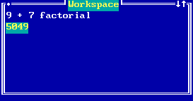

Appendix 1: Working with TOOL
1.1 Starting TOOL
TOOL starts up with a blank screen and a cursor. You can move the cursor around with the arrow keys or with the mouse.
To get anything else done, you must bring up a menu. To do this, press and release the Alt key, or hold down the Alt key then press = and release the Alt key, or click with the right mouse button. You will see the system menu, centered on the cursor:
Notice that the cursor is now a highlighted bar that moves up and down through the menu choices. You can also move the cursor off the menu entirely.
To make a menu selection, move the highlighted bar to the option of your choice, and press Enter or click with the left mouse button. To see how this works, select the Exit TOOL option. When you do this, you will see the exit menu:
If you select outside of the menu (by pressing Enter or clicking with the left mouse button) you will dismiss or cancel the menu, and it will disappear.
1.2 Exiting TOOL
You may choose one of these options to exit TOOL, either saving the changes you made to the system during a session or not.
1.3 The TOOL workspace
Begin by popping up the system menu. Then select the option Open Workspace.
You will see a window framer object on the screen with the cursor attached to its upper left hand corner (the origin):
 |
When you have the origin where you want it, press Enter (or click the left button). The cursor now jumps to the bottom right hand corner and you may change the size of the workspace window. When you have the desired size, press Enter.
 |
1.4 Moving and resizing windows
You have a good deal of control over the size and position of the window (as you do with all windows in TOOL, including menus). To move the window, position the cursor onto the top border or the left border of the window (but not on one of the corners). Then press Enter or click the left button. The window borders will be replaced with a dashed line:
 |
Now, the cursor will move the dashed border. When you have it where you want it, press Enter again. The window will move to the position indicated by the dashed border.
To change the size of the window, move the cusor to any one of the four corners of the window and press Enter. Again, the border will become dashed. But this time, the cursor will move only one corner of the window. The opposite corner will remain fixed in its original position. When the dashed borders indicate the desired size of the window, press Enter again.
With the mouse, you may move and resize the window by dragging it from the top or left borders or from one of the corners. To do this, position the cursor, then hold down the left mouse button. The window borders will become dashed. Now, while holding the left mouse button down, move the dashed border. When it is where you want it, release the left mouse button.
1.5 The window menu
If you ask for a menu while the cursor is anywhere on the window border, you will pop up the window menu:
 |
- Bury
- This option will move the window below any other windows that might be on the desktop.
- Inspect
- This will open a
Lookerwindow giving access to the internal state of the window object itself (more about this later; for now, avoid using this). - Minimize
- This will shrink the window as much as possible. If you pop up the window menu on the new window, you will see a slightly different menu. Choose Restore to restore the window to its normal size and position.
- Color
- This will allow you to change the color of the window.
- Close
- This closes the window and throws away everything in it. You are not always given a second chance, so use this one cautiously.
- Label
- This will allow you to change the label of the window to something other than "Workspace". Just edit the label in the window provided, then press ENTER.
- Transpose
- This will have no effect on a workspace. Its use will be described later.
- Maximize
- This will make the window as large as possible. To restore it to its original size and position, pop up the window menu and select Restore.
1.6 The TOOL text editor
When you move the cursor into the workspace and begin typing, you will notice that it changes from a block to an underscore. To position the cursor to the upper left hand corner of the workspace, move it into the workspace (anywhere), and press HOME, HOME, up arrow.
The arrow keys move the cursor (but cannot move it out of the workspace entirely, unless you press F7 first).
The editor does not do word wrapping, at the right side of the workspace window, so you will need to use the ENTER key to begin a new line.
The BACKSPACE key deletes the character just to the left of the cursor, or if the cursor is at the left end of a line, it joins that line to the end of the previous line.
If you have so many lines of text that all of them are not visible at once in the workspace, use the PAGE-UP and PAGE-DOWN keys to scroll the text thru the window one line at a time.
HOME, left arrow moves the cursor to the beginning of the current line, and the END key moves it to the end of the line.
Control-left-arrow and control-right-arrow move one word left and right respectively.
To select a block of text, position the cursor on the first character to be selected and click the left mouse button, press Alt-F4, or F12 (SELECT). Then position the cursor just past the last character to be selected and SELECT again. The text will be highlighted. To remove the selection, just SELECT a third time.
If you wish to select an entire word, SELECT twice with the cursor on the same letter of the word.
If you wish to select an entire line, press SELECT twice with the cursor on the first position of the line to be selected.
The Delete key deletes the character at the cursor. Ctrl-End deletes from that character to the end of the line. Ctrl-Backspace deletes the entire word (and trailing blanks).
The text pane used in the workspace window has a menu of options:
 |
- Original
- Restores the previously saved contents of the window. If you have not saved anything, this will clear the workspace.
- Uses DPPRINT (if available) to print either the current text selection, or if nothing is selected, the entire contents of the text pane.
- Delete
- This deletes the currently selected block of text.
- Save
- This makes a copy of the selected block of text within the window into a place called the CopyBuffer.
- Retrieve
- This inserts the text stored in the CopyBuffer into the text at the place the cursor was when the text menu was popped up.
- eXecute
- The selected text is compiled and executed.
- Evaluate
- The selected text is compiled and (if there are no compiler errors) executed. The result produced by executing the selected text is shown in the window and is highlighted, becoming the selected block.
- Inspect
- The selected text is compiled and executed. The system then opens up a
Lookerwindow onto the resulting object (more about this later). - Copy
- This places a copy of the selected block of text (or, if nothing is selected, the entire text) into the CopyBuffer, and the system expects you to move to another place in this window or any other and press Enter to retrieve the copy (Copy/Move mode).
- Move
- This removes the selected block of text, placing a copy of it in the CopyBuffer, and enters Copy/Move mode.
- Accept
- This causes the workspace to store the contents of the text pane for possible restoration in a subsequent use of the Original option.
- Zoom
- Select this option to make the text area as large as possible. Selecting this option a second time will restore the text area to its original size. This will have no effect in a workspace.
1.7 The Evaluate option
Type an arithmetic expression into a workspace. For example:
Now select the entire line. One way to do this is to position the cursor at the left end of the line (Home, Home, Left Arrow), then SELECT (Alt-F4, F12, or left mouse button click) twice in a row.
 |
Pop up the text menu (press Alt, press Alt-=, or click the right mouse button).
 |
Select Evaluate. The arithmetic expression will be evaluated, and the answer shown as the highlighted selection:
|  |
1.8 The Inspect option
Type a list constant in a workspace and select the entire line. For example:
Pop up the text menu and select the Inspect option:
 |
When you select Inspect, a new window will appear on top of the workspace and partially overlapping it. Its title will be highlighted, because it is now the active window:
Unlike the windows we have seen so far, this one has two panes. The pane on the left has an entry self meaning the object being inspected, and the index of each entry in the array part of the object. In the pane on the right will be shown the item which we select in the left pane. Try this now by selecting the item labelled "self":
 |
Try looking at the first entry in the list:
 |
The fourth element of the list is itself a list:
 |
You can inspect it by double clicking the left mouse button on the line labelled "4" (or pop up the menu in the left pane and select the Inspect option):
Copyright © March 8, 1995 Bruce Conrad